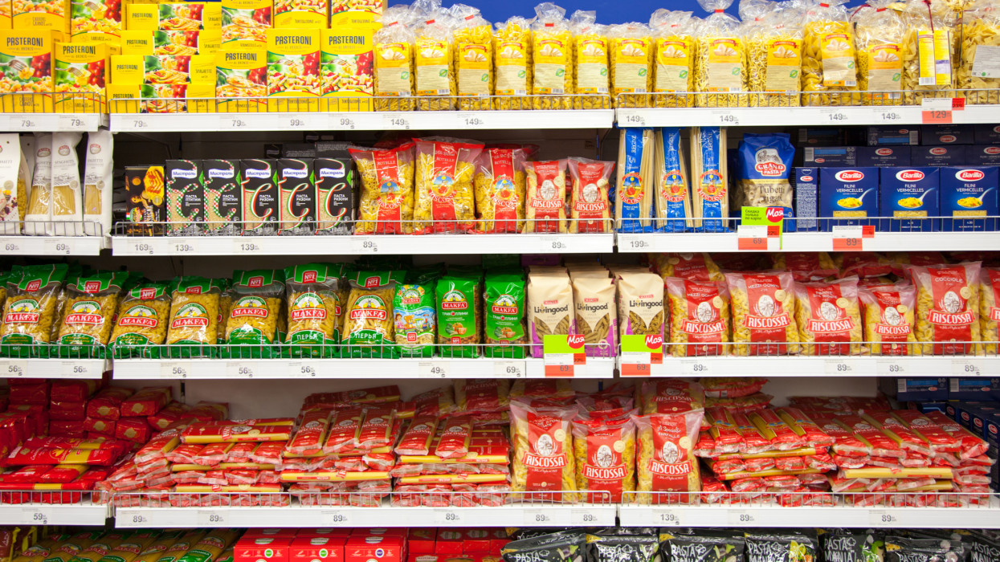

Legyen üdvözölve az oldalon!
Az oldalunk célja, hogy segítséget nyújtson élelmiszer üzletek számára az eladási adatok gyors és hatékony elemzésében.
Napi eladási mutatóit: termékszinten és összesítve
Trendeket és mintázatokat: mely napokon vagy termékeknél érhető el a legnagyobb forgalom
Fedezze fel, hogyan segíthetünk Önnek az üzleti teljesítmény növelésében!
